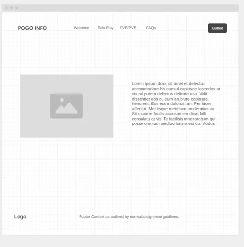

Pokemon Go Basic Information
The purpose of this website is to introduce new players of the game Pokemon Go to the basic information and mechanics of the game. This website will cover different pokeballs, different berries, throwing pokeballs, stardust, and the basic menu options!
Pokemon Go can be a very intense game, especially when first starting out. There are multiple mechanics and different paths one can go down, and ultimately various ways to play. From casually catching pokemon and completing research, to grinding out raids, PVP (player-vs-player), and community days, there is a vast range of playstyles. I hope to be able to cover all of these, at least on a basic level, in this website.
Color Palette
| Primary | Secondary | Tertiary | Background |
|---|---|---|---|
| [#0e7c7b] | [#17bebb] | [#d4f4dd] | [#071e22] |
Typography
Heading Font: Barlow
Paragraph Font: Oxanium
FAQs (Scenarios)
When talking with my more experienced friends, I hear a lot about "IVs". What are those?
Help, I'm running out of Pokemon space and Item Bag space! What do i do?
Is it possible to spend money on this game?
Wireframes
Here are the wireframes for this site.
Home Page
The home page of the site will have the nav bar on top, with the logo on the top left and a hamburger menu button on the top right. There will be an image of the Pokemon Go logo and some text welcoming the trainer to the site. This will be the introduction and purpose of the site.
Mobile Home Page
The mobile view of the homepage will feature a hamburger navigation menu with a button, and a footer that has elements layered on top of each other instead of next to each other.
Solo Play
For this page, there will be 4-6 differnt tiles with different titles, explaining each mechanic in detail. After making the wirefram, I realized it would be helpful to add a cropped screenshot between the header and the text outlining which part is being explained.
PVP/PVE
This page will outline the mulitplayer aspects of Pokemon Go, more commonly known as PVP (plaver verses player), and PVE (player verses environment). There is more of a description of Raids/Gym Battles, since it is easier to get into. For the PVP aspect, there is a disclaimer regarding the learning curve and resources needed to perform well, and then a description below.
FAQs
This page will answer any frequently asked questions about the game as well as other information that would be beneficial to any and all players. The helpful links, after the wireframe was made, will be part of the next page instead.
Helpful Links / Newsletter Sign-Up
As mentioned above, the helpful links will be on this page and will lead to helpful subreddits, a few top Poketuber's YouTube channels, and links to websites for assistance with PVP/PVE skills.